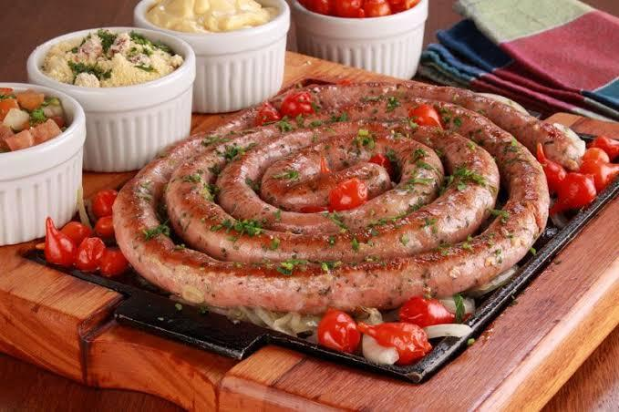

O Fazer das Nossas Linguiças – Autêntico e Artesanal
A arte de produzir linguiças artesanais vai muito além de misturar carne e temperos. Em nosso restaurante, cada linguiça é feita à mão, respeitando técnicas tradicionais e usando apenas ingredientes frescos e cuidadosamente selecionados.
- Usamos carnes nobres e temperos naturais, garantindo um sabor único em cada linguiça.
- Nossa equipe domina as técnicas de defumação, secagem e tempero, o que permite realçar sabores naturais e criar combinações exclusivas.
- Exploramos sabores regionais e inovadores, oferecendo desde clássicos até receitas criativas que surpreendem o paladar.